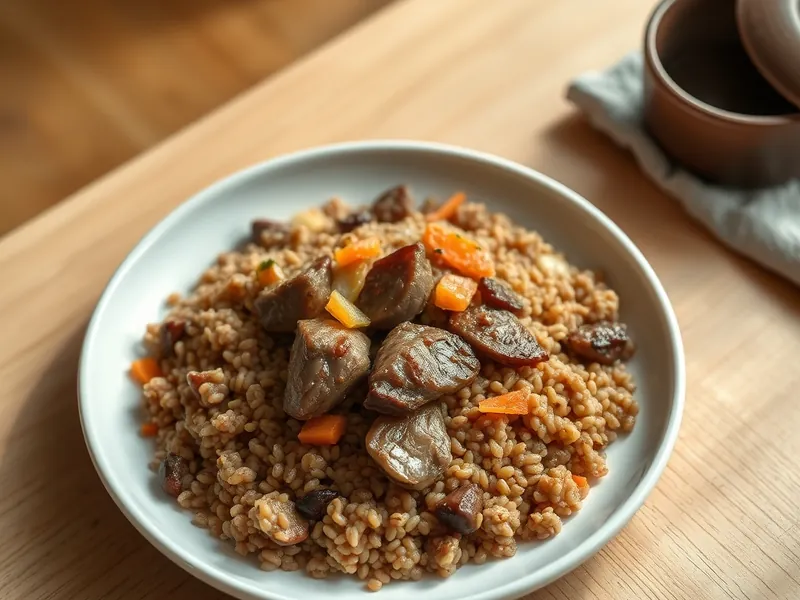

Фото: Иллюстрация ИИ, Cloudflare Workers AI
Гречка с куриной печенью и луком
Гречка, перемешанная на сковороде с обжаренной печенью, луком и морковью
30 мин3 порц.576 ккал на порциюБ 36 · Ж 26 · У 53Русская кухня
Открыть в приложении: порции, таймеры, список покупок
Продукты на 3 порц.
- Гречка1 стак.
- Вода2 стак.
- Куриная печень400 г
- Лук репчатый2 шт
- Морковь1 шт
- Растительное масло2 ст. л.
- Сливочное масло20 г
- Соль1,5 ч. л.
- Перец чёрный молотыйпо вкусу
Как готовить
- Промойте гречку, залейте кипятком, посолите и варите под крышкой на слабом огне 18 минут.
- Пока варится гречка, промойте печень, обрежьте плёнки и протоки, нарежьте кусочками 2-3 см. Лук нарежьте полукольцами, морковь натрите на крупной тёрке.
- Разогрейте масло на среднем огне и обжарьте лук с морковью 5 минут до мягкости. Сдвиньте овощи к краю.
- Прибавьте огонь до сильного, выложите печень и жарьте 3 минуты с каждой стороны, пока сок на разрезе не станет розовым, а не красным. Посолите и поперчите.
- Выложите в сковороду готовую гречку и сливочное масло, перемешайте и прогрейте 2 минуты.
Совет. Печень солите только в конце жарки: соль в начале вытягивает сок, и печень становится жёсткой.